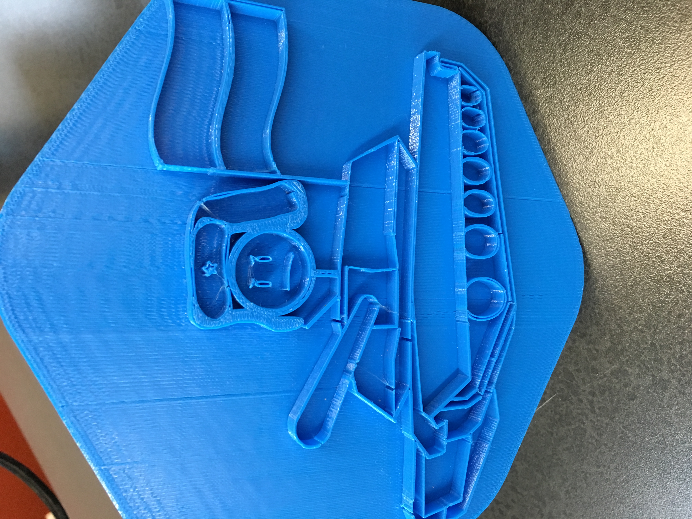
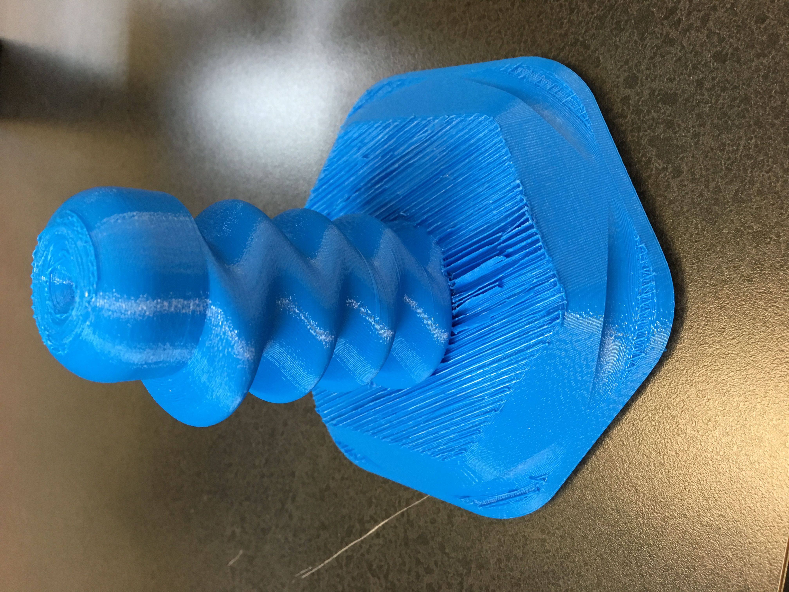
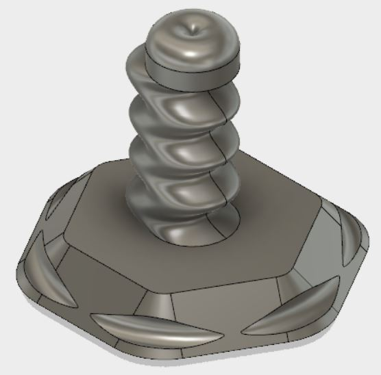

Hello fellow creatures of this planet, This is what I created my second week of Digital Engineering This is my wax seal stamp that I 3-D printed using the Makerbot Printer, and designed in Fusion 360. 
 The stamp took roughly 25 hours to 3D print and when completed was large enough to grasp the entire handle in your hand. This is the original design for the stamp designed in Fusion 360. 
This is the file you can download to replicate on your own!!!!
STL File (.stl)